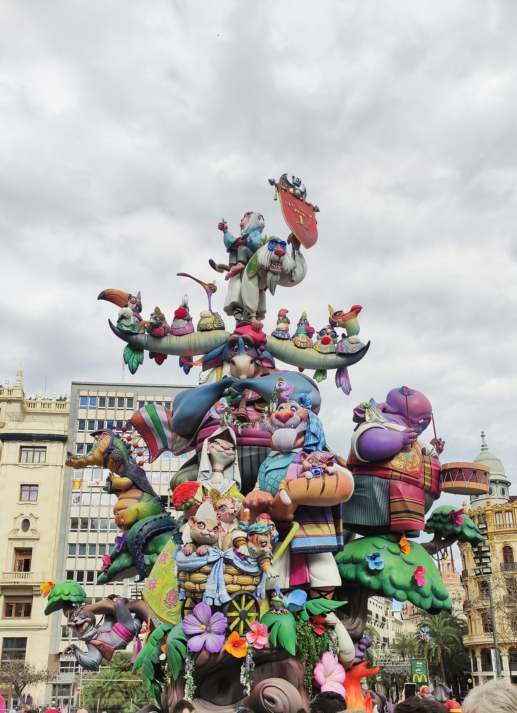

Las Fallas de Valencia
Valencia · Comunitat Valenciana · «Un año de trabajo para quemarlo en una noche.»
Fecha fija · San José, 19 de marzo · Más de 380 comisiones falleras · Mascletà diaria del 1 al 19 · Cremà la noche del 19
⚠️ Horarios exactos de cada acto en jcf.gva.es. Consulta el programa oficial antes de planificar la visita.
- La Ofrenda de flores a la Virgen de los Desamparados es un acto de devoción en el que miles de falleras y falleros llevan meses preparándose. Quien la presencia entra en algo que para ellos tiene un significado que la estética del desfile no alcanza a transmitir.
- Los monumentos critican, exageran y a veces incomodan. Eso forma parte de la fiesta desde su origen satírico en los siglos XVIII y XIX, no es una licencia moderna. Entenderlo así cambia cómo se lee lo que se está mirando.
- En la Cremà, los falleros queman en minutos lo que han construido durante un año. Para quien lo ve desde fuera es un momento de gran intensidad visual; para ellos es el cierre de un ciclo que empezó doce meses antes. Vale la pena tenerlo presente mientras arde.
La esencia de la fiesta
La pólvora llega antes que la luz. A primera hora de la mañana, cuando todavía no ha salido el sol, el sonido de los tróns de bac golpeando el asfalto recorre los barrios de Valencia. Eso es la despertà: una señal que nadie ha pedido y que toda la ciudad espera. Huele a pólvora, a buñuelos de calabaza y, cuando el viento sopla del este, a naranja madura del huerto cercano.
Durante diecinueve días, Valencia construye el museo al aire libre más grande y más extraño de España. Un museo donde las piezas critican a los políticos del año, donde los vecinos conocen a los artistas por su nombre y donde saben, desde el primer día, que todo va a arder. La noche del 19 de marzo arden a la vez. Eso también es parte del plan.
¿En qué consiste?
Las Fallas son una fiesta de barrio que acaba llenando una ciudad entera. Más de 380 comisiones falleras de Valencia llevan meses construyendo cada una dos monumentos —uno mayor y uno infantil— que estarán en la calle apenas unos días antes de arder todos en la misma noche. Son estructuras de varios pisos con figuras que critican y retratan la actualidad: políticos, personajes públicos, costumbres del año. Cada monumento tiene su guion escrito en el llibret, el cuadernillo que la comisión reparte entre sus socios.
La fiesta arranca despacio. Desde el 1 de marzo, la ciudad se despierta cada día con la despertà y a mediodía la mascletà en la Plaza del Ayuntamiento lanza ondas sonoras que se sienten en el pecho antes de oírse. Del 15 al 19, los monumentos están plantados y cualquier calle del centro puede tener una falla de diez metros entre los coches aparcados.
La Junta Central Fallera, creada en 1939, coordina el conjunto de comisiones y gestiona el sistema de secciones por las que compiten los monumentos. La cúspide es la Sección Especial: un grupo reducido de comisiones con los mayores presupuestos y la ingeniería plástica más ambiciosa, cuyos monumentos pueden costar entre medio millón y más de un millón de euros.
Un fallero o fallera puede llevar en la comisión de su barrio desde niño, haber desfilado en la Ofrenda durante décadas y haber visto arder docenas de fallas desde el mismo sitio. Para ellos la fiesta no empieza el 15 de marzo ni acaba el 19: dura todo el año. El visitante entra en eso aunque no lo sepa. Lo primero que nota es que en el casal del barrio hay gente un martes de noviembre preparando algo que no existe todavía.
⚠️ Los horarios exactos de cada acto los publica la Junta Central Fallera. Consulta jcf.gva.es antes de planificar la visita.
Historia y significado
El origen de Las Fallas se explica a menudo con la historia de los carpinteros valencianos que quemaban restos de madera al llegar la primavera. Es una imagen bonita, pero es un mito. La formuló el Marqués de Cruïlles en su guía de Valencia de 1876 y se ha repetido desde entonces sin respaldo documental. Lo que los archivos municipales sí registran son los bandos de prohibición del Ayuntamiento de Valencia de 1740 y 1784, que prohíben la quema de peleles satíricos en la calle. Esos peleles —llamados en valenciano estot o ninot— eran figuras de trapo que los vecinos colgaban en las esquinas para ridiculizar a alguien del barrio y que quemaban en las fiestas previas a la cuaresma. Ahí está el origen real de la falla: en la sátira carnavalesca de los siglos XVIII y XIX, no en la carpintería.
Con el tiempo esas figuras de trapo se convirtieron en monumentos de varias plantas construidos por artistas profesionales. La fiesta fue creciendo durante el siglo XX hasta obtener la declaración de Fiesta de Interés Turístico Internacional en 1965, mediante la Resolución de 25 de enero de ese año de la Subsecretaría de Turismo, publicada en el BOE nº 35. El Consell de la Generalitat Valenciana la declaró Bien de Interés Cultural Inmaterial mediante el Decreto 44/2012, de 9 de marzo (DOGV nº 6732, BOE nº 71 de 23 de marzo de 2012). Y en 2016 la UNESCO la inscribió en la Lista Representativa del Patrimonio Cultural Inmaterial de la Humanidad (expediente nº 00859, 30 de noviembre de 2016).
Fechas 2026
La fecha de Las Fallas es fija: la festividad de San José cae siempre el 19 de marzo y la Cremà se celebra esa misma noche. El programa oficial arranca el 1 de marzo con la primera mascletà. Los monumentos se plantan el 15 y el ciclo cierra con la Cremà entre la noche del 19 y la madrugada del 20.
Los actos principales
-
1–19 de marzo · Mediodía
Mascletà en la Plaza del Ayuntamiento
Disparo pirotécnico diurno de fuerte impacto sonoro. No es un castillo de fuegos: es una secuencia de explosiones calibradas para que el sonido llegue al cuerpo antes que a los oídos. Dura entre seis y doce minutos. Se celebra cada día a las dos del mediodía durante todo el periodo festivo.
-
15 de marzo
Plantà — los monumentos llegan a la calle
Las comisiones montan sus monumentos en el espacio público durante el día. Las piezas grandes se levantan con grúas; el remate superior, en muchas comisiones, se iza a pulso mediante cuerdas y contrapesos humanos siguiendo la técnica tradicional llamada plantà al tombe. El 15 de marzo al amanecer, la ciudad tiene una falla en cada esquina.
-
17–18 de marzo · Tarde y noche
Ofrenda de flores a la Virgen de los Desamparados
Desfile de todas las comisiones falleras hasta la Plaza de la Virgen. Cada fallera y fallero lleva un ramo de flores con el que se va construyendo el manto floral de la imagen de la Virgen. El desfile dura hasta bien entrada la noche de los dos días.
-
18 de marzo · Noche
Nit del Foc
Gran castillo de fuegos artificiales lanzado desde el cauce del río Turia. Es el acto pirotécnico más grande de la semana y marca el inicio del cuenta atrás hacia la Cremà.
-
19 de marzo · Noche
Cremà
La quema de todos los monumentos en la misma noche. Las fallas infantiles arden primero, al caer la tarde. Las grandes, a partir de medianoche, por orden establecido, hasta que la falla municipal de la Plaza del Ayuntamiento cierra el ciclo ya de madrugada. Lo que tarda en arder una falla de varias plantas suele ser menos de veinte minutos.
Música y sonido
La mascletà no suena: golpea. La secuencia de detonaciones está diseñada para que las ondas expansivas lleguen al esternón antes de que el oído las procese como sonido. Quien la escucha por primera vez desde la Plaza del Ayuntamiento suele parpadear en el primer disparo y quedarse quieto en los siguientes. Al cabo de diez minutos, cuando termina, el silencio pesa.
El sonido más reconocible del día a día festivo es el del tró de bac en la despertà: el golpe seco de un petardo de fulminante contra el asfalto, a cualquier hora de la mañana, en cualquier calle de la ciudad. No lleva mecha, no avisa. Solo el golpe y el eco. Así durante diecinueve días.
La Cremà tiene su propio registro: el crepitar de la madera y el cartón a gran temperatura, el calor que se siente en la cara a veinte metros de distancia y el silencio de las personas que miran arder algo que conocen. El sonido de las bandas de música que acompañan la quema de cada falla llega desde lejos y se mezcla con el de la siguiente que ya está ardiendo en otra calle.
No te lo puedes perder
Una mascletà desde la plaza
1–19 de marzo · Mediodía · Plaza del AyuntamientoLlega con tiempo, sitúate en la plaza y deja que la primera detonación te sorprenda. Lo que hace la mascletà con el cuerpo no se anticipa hasta que ocurre. Hay quien se tapa los oídos. Hay quien no puede y se va. Hay quien vuelve al día siguiente.
¿Por qué no perdértelo?
Porque no hay ningún otro acto festivo en España donde el sonido sea el protagonista en este sentido físico. La mascletà no es ruidosa: es corporal. La diferencia entre escucharla por vídeo y estar en la plaza durante la última salva es la diferencia entre ver una foto del mar y meterte en el agua.
Los monumentos de noche
15–18 de marzo · Noche · Barrios del centroDe noche, los monumentos se iluminan y las calles tienen una escala distinta. Sin el ruido del día, con menos gente, es cuando mejor se ve el trabajo: los detalles de las figuras, los textos del llibret en los carteles, la relación entre el monumento y el edificio que tiene detrás.
¿Por qué no perdértelo?
Porque de día los monumentos compiten con el ruido, la gente y la pólvora. De noche son solo ellos. Y porque el visitante que los ve a las once de la noche del 17 de marzo sabe que en cuarenta y ocho horas eso ya no existe.
La Ofrenda de flores
17–18 de marzo · Tarde y noche · Plaza de la VirgenMiles de falleras y falleros en traje tradicional desfilan durante horas hacia la Plaza de la Virgen. La indumentaria —el espolín de seda, las peinetas y los rodetes del traje de siglo XIX, o el justillo del traje de siglo XVIII— es artesanía textil de primer orden. El manto floral de la imagen se va construyendo ramo a ramo durante los dos días.
¿Por qué no perdértelo?
Porque es el momento en que la dimensión devocional de la fiesta se hace visible sin que nadie la explique. El traje, el paso, el ramo: todo tiene una carga de significado que viene de décadas de repetición. El visitante lo percibe aunque no sepa exactamente qué está mirando.
La Cremà de una falla de barrio
19 de marzo · Noche · Barrios del centroLa falla municipal es la más grande y la más fotografiada, pero no es necesariamente la más intensa. La Cremà de una falla de barrio, con los vecinos en círculo, la banda tocando y el artista fallero mirando arder su propio trabajo, tiene una escala humana que la falla del Ayuntamiento no puede tener.
¿Por qué no perdértelo?
Porque en la falla de barrio ves a la gente que ha construido eso. Están ahí. Y la cara del artista fallero cuando arde la primera llama dice más sobre Las Fallas que cualquier descripción.
Consejos prácticos
- Cuándo llegar: si solo puedes ir unos días, el 15 es el de la Plantà —la ciudad amanece transformada— y el 19 es la Cremà. Si tienes más tiempo, los días 17 y 18 tienen la Ofrenda y la Nit del Foc. Del 1 al 14 el ambiente es más tranquilo y la mascletà se disfruta sin aglomeraciones.
- La mascletà: llega a la Plaza del Ayuntamiento al menos media hora antes. La plaza se llena rápido. Sitúate en el centro para sentir las ondas expansivas. Los oídos: llevar tapones es válido, aunque cambia la experiencia.
- Alojamiento: reserva con meses de antelación. Valencia en Fallas tiene la ocupación hotelera más alta del año. El casco histórico y El Carmen son los barrios con más ambiente festivo pero también los más ruidosos por la noche.
- Desplazamiento: el centro queda cortado al tráfico durante los días de plantà y Cremà. El metro y los autobuses de la EMT tienen servicios reforzados. Moverse a pie es la mejor opción dentro del casco histórico.
- La despertà: empieza antes de que salga el sol. Si te alojas en el centro, las ventanas no aíslan mucho. Asúmelo como parte de la experiencia o pide habitación interior en el hotel.
- Gastronomía: los buñuelos de calabaza fritos en los puestos de la calle son el alimento de las Fallas: se comen con chocolate o con azúcar, a cualquier hora. La horchata con fartons es la otra constante. El agua de Valencia —cava, zumo de naranja y licor de naranja— aparece en los casals y bares de los barrios festivos.
Vocabulario festero
- Falla
- Monumento artístico y satírico de varios pisos construido con materiales efímeros —madera, cartón, poliestireno— para ser quemado la noche del 19 de marzo. Cada comisión levanta uno mayor y uno infantil.
- Ninot
- Figura humana o animal que forma parte del monumento fallero. Cada año el público vota cuál es la mejor de todas las fallas de Valencia; esa pieza se salva de la quema y pasa al Museu Faller. Se llama Ninot Indultat.
- Cremà
- La quema de todos los monumentos en la noche del 19 de marzo. Las fallas infantiles arden al caer la tarde; las grandes, desde medianoche. Una falla de varios pisos tarda menos de veinte minutos en quemarse.
- Mascletà
- Secuencia pirotécnica diurna de fuerte impacto sonoro que se dispara cada día a las dos del mediodía en la Plaza del Ayuntamiento durante todo el periodo festivo. No busca efectos en el cielo: su diseño es rítmico, físico y acústico, con un crescendo de calibres que termina en un terremoto a ras de suelo.
- Despertà
- Recorrido por los barrios al amanecer en el que los tiradors disparan tróns de bac para despertar a la ciudad. Empieza antes de que salga el sol y puede durar varias horas.
- Tró de bac
- El petardo de fulminante sin mecha propio de la despertà valenciana. Se activa por impacto al golpearlo contra el suelo. Documentado desde principios del siglo XX, es un artefacto pirotécnico exclusivo de la tradición fallera. Su uso exige la acreditación CRE (Consumidor Reconocido como Experto) según la legislación española de pirotecnia.
- Plantà
- El montaje del monumento en la calle, que se completa el 15 de marzo. Las piezas principales se elevan con grúas; el remate superior de algunas fallas se iza a pulso siguiendo la técnica tradicional llamada plantà al tombe.
- Espolín
- Tejido de seda natural labrado en telar de tiro Jacquard con motivos florales o geométricos, característico de la indumentaria valenciana de gala. El traje de fallera de siglo XIX se confecciona con espolín y se completa con peineta, rodetes laterales y agujas pasaderas. El de siglo XVIII lleva justillo, cuerpo de coteta y un solo moño.
- Casal
- Sede social de la comisión fallera donde los miembros se reúnen durante todo el año. El casal es el corazón de la vida fallera: ahí se organiza la fiesta, se recauda el presupuesto, se discute el tema del monumento y se celebra cualquier excusa durante los doce meses previos.
Galería
Enlaces útiles
Fuente de fechas: jcf.gva.es — consultado el 01/10/2026
Preguntas frecuentes
- ¿Cuándo son Las Fallas de Valencia?
- El grueso de la fiesta va del 15 al 19 de marzo, fecha fija ligada a la festividad de San José. La mascletà se celebra todos los días del 1 al 19. La Plantà llega el 15, la Ofrenda los días 17 y 18, la Nit del Foc el 18 por la noche y la Cremà el 19 de marzo.
- ¿Qué es el Ninot Indultat?
- Cada año el público vota la figura de falla que considera mejor y esa pieza se salva de la Cremà. El Ninot Indultat pasa al Museu Faller de Valencia, donde se conservan los indultados de todas las ediciones desde 1934.
- ¿Qué es el tró de bac?
- El petardo de fulminante sin mecha que usan los tiradors durante la despertà. Se activa por impacto al golpearlo contra el suelo. Es un artefacto pirotécnico exclusivo de la tradición fallera valenciana, documentado desde principios del siglo XX.
- ¿Cuánto cuestan los monumentos de la Sección Especial?
- Entre 500.000 y más de un millón de euros. Son estructuras de varios pisos construidas por equipos de artistas falleros durante meses en los talleres de la Ciutat Fallera. La financiación viene de las cuotas de los socios de la comisión y de patrocinadores.
- ¿Se puede participar en Las Fallas sin ser fallero?
- Sí. Todos los actos principales —mascletà, Ofrenda, Nit del Foc y Cremà— son de acceso libre y gratuito. El visitante puede recorrer los monumentos, asistir a los actos y vivir el ambiente de los casals sin pertenecer a ninguna comisión.